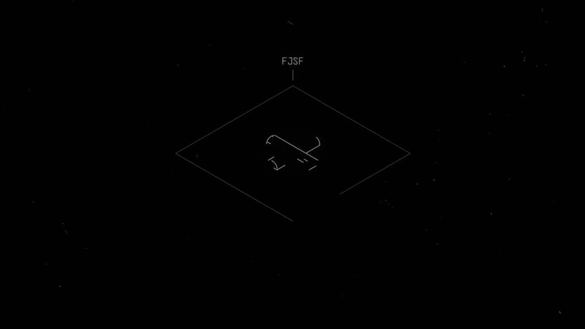
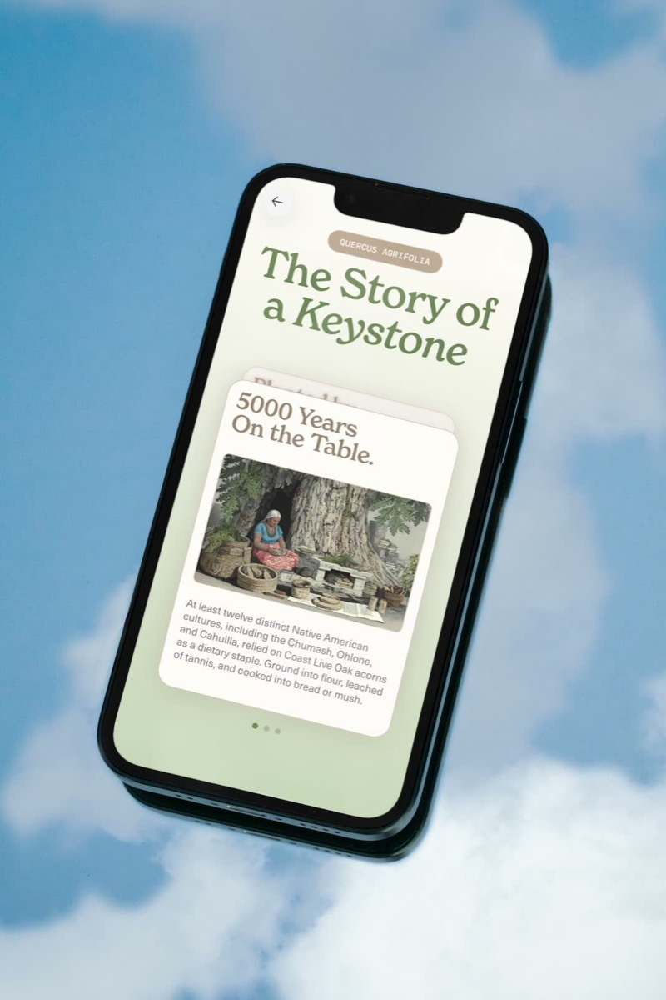
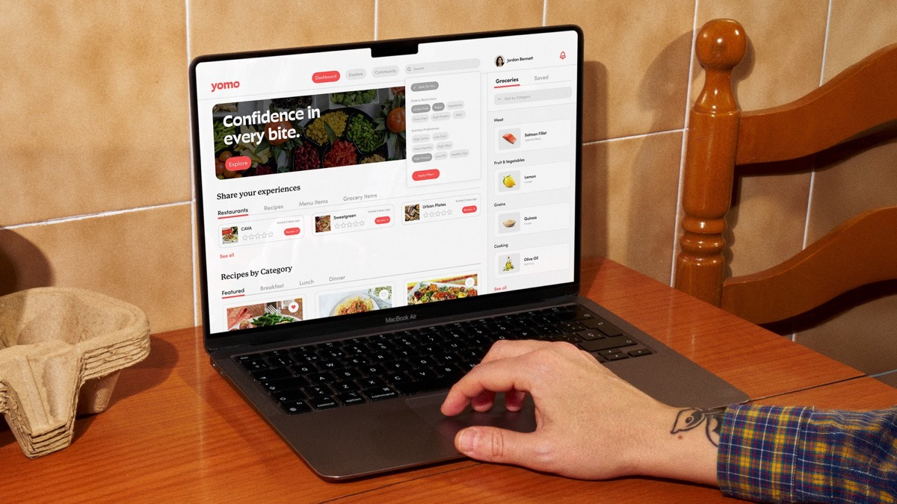

Examples


Code
<div class="mh-split">
<a class="mh-media" href="#"><img src="../../assets/samples/gaia.jpg" alt="Gaia app on a phone resting on a mirror in a field of daisies"></a>
<a class="mh-media" data-stroke href="#"><img src="../../assets/samples/airpods.jpg" alt="AirPods Pro 3 earbuds on a white background"></a>
</div>Ratios



Code
<div class="ds-demo-row" style="align-items:flex-start;flex-wrap:nowrap">
<div class="mh-media" style="flex:1.6"><img src="../../assets/samples/peak-energy.jpg" alt=""></div>
<div class="mh-media" data-ratio="4:5" style="flex:1"><img src="../../assets/samples/gaia-portrait.jpg" alt=""></div>
<div class="mh-media" data-ratio="1:1" style="flex:1"><img src="../../assets/samples/national-park-cards.jpg" alt=""></div>
</div>Video with poster
<div class="mh-media">
<img src="poster.jpg" alt="">
<video src="clip.mp4" poster="poster.jpg" muted loop playsinline autoplay preload="metadata"></video>
</div>Usage
- Square corners, always. No radius, no shadow.
- 16:9 is the default for thumbnails and hero media. Use 4:5 / 1:1 / 3:2 in case-study galleries when the asset calls for it, and
autoto keep an asset's own ratio. - Stroke (
data-stroke): a 1px Stroke Gray inset outline, for media on white or near-cream backgrounds (product shots, UI) that would otherwise bleed into the page. It's a per-project CMS field (Thumbnail Stroke). - Hover: when the frame is in a link, the image scales to 1.02 over 420ms Snappy. The frame stays still.
- Video: the poster image stays painted under the video, and the video fades in once it can play. Never leave a blank frame between them.
- Placeholder color is white (
--mh-bg-media).
API
| Attribute | Values | Effect |
|---|---|---|
class="mh-media" | n/a | position: relative, overflow: hidden, 16:9, children cover |
data-ratio | 4:3, 3:2, 1:1, 4:5, auto | Aspect ratio |
data-stroke | n/a | 1px inset --mh-border-stroke outline |
Accessibility
- Every meaningful image needs
altthat describes it ("AirPods Pro 3 earbuds on a white background"). Decorative duplicates (posters under video) getalt="". - Autoplay video must be
mutedandplaysinline, and must pause under reduced motion or offscreen.
Framer mapping
- Case-study media:
ResponsiveCaseStudyImage(vIFnGmg) andResponsiveCaseStudyVideo(bsTLKCt); galleries:CaseStudyJustifiedMediaGrid(c0iPrbN),DoubleStackGalleryGrid,MatchedStackMediaPair. - Stroke:
CaseStudyThumbnailStrokeStyles(Z28JYvA) reads the CMSThumbnail Strokefield (OHdUYs6Mo) and paints#979797. - Playback budget and offscreen pausing:
CaseStudyVideoManager(rGMwETR). Don't add a second video controller. - Optimize media with
code/tools/image-optimizer before upload (seedocs/performance-media-deployment-checklist-2026-07-23.md).
Don't
- Don't round corners or add captions inside the frame.
- Don't letterbox with colored bars; crop with
object-fit: cover. - Don't scale the frame on hover; scale the image inside it.